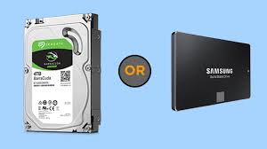

Build a PC

Storage
It can be tricky to know exactly how much storage you’ll need. Make your best informed guess. Look at how much space your current list of games requires and use this number as a benchmark.
Then there’s another choice you have to make. You can buy either a hard drive or a solid-state drive (SSD). Some sources recommend combining a lower-end SSD with a hard drive for the best of both worlds. But if you can cover your storage needs with an SSD alone, it may be helpful to go this route, as these drives can halve loading times, no problem.
If this sounds overwhelming, don’t worry. It’s possible to add storage to your PC in the future.
Buy HDD/SSD online
 PC Assembler
Laptops
Build a PC
Recommended Rigs
PC Assembler
Laptops
Build a PC
Recommended Rigs